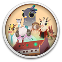

 Fall of Porcupine: Prologue
Details
 |
|
| Spielzeit | Nicht gespielt |
| Letzte Aktivität | Nie |
| Hinzugefügt | 29.08.2022 18:01:42 |
| Modifiziert | 12.12.2022 1:04:19 |
| Fertigstellungsstatus | Not Played |
| Bibliothek | Gog |
| Quelle | GOG |
| Plattform | PC (Windows) |
| Veröffentlichungsdatum | 23.08.2022 |
| Community Bewertungen | |
| Kritiker Punkte | |
| Benutzerwertung | |
| Genre | Adventure Platform Puzzle |
| Entwickler | BUNTSPECHT.GAMES |
| Verleger | Assemble Entertainment |
| Eigenschaft | Single Player |
| Links | Store |
| Tag | 2D Atmospheric Choices Matter Emotional Indie Platformer Story Rich |
Beschreibung

Ein neuer Job kann ganz schön anstrengend sein - vor allem, wenn man Arzt wird! Begleite Finley in einem brandneuen Abenteuer bei seinen ersten Schritten in einer neuen und aufregenden Welt.
FALL OF PORCUPINE: PROLOGUE ist eine 100% kostenlose Story-Episode für das bald erhältliche Adventure FALL OF PORCUPINE.
DER HERBST KOMMT
FALL OF PORCUPINE ist ein einzigartiges Story Adventure. Der Zusammenprall von Arbeit und Alltag - ein Sinnbild für ein ungesundes Gesundheits-System.
FEATURES
“Verpasse nicht unsere großartigen Features! Lies weiter!“
Erkunde eine wunderschöne und vielseitige Welt
Nicht nur im alten Krankenhaus gibt es allerhand zu entdecken, sondern auch in der Kleinstadt selbst. Trinke ein Bier mit den Stadtbewohnern im Pub oder unternehme einen Ausflug in den nahen Wald, in dem sich geheimnisvolle Burgruinen verbergen!
Lerne spannende Charaktere kennen
Die knallharte Oberärztin, der selbstlose Pfleger oder die einfühlsame Freundin von Finley; Sie alle leben im kleinen Ort Porcupine. Führe mit ihnen lustige, tiefschürfende und ernste Dialoge und entscheide selbst, wie du antworten möchtest.
Demonstriere deine Skills und Empathie
Deine Patienten warten! Finde in Gesprächen heraus, was ihnen fehlt und behandle sie in verschiedenen Minigames, die auf kreative Weise die Aufgaben eines Arztes abbilden. Kannst du einen kühlen Kopf bewahren, wenn dich die strenge Oberärztin mal wieder in die Mangel nimmt?
Decke düstere Geheimnisse auf
Auf den ersten Blick ist die Kleinstadt ein idyllischer Ort, in dem sich jeder Bewohner kennt und grüßt. Doch wer länger dort wohnt, ahnt, dass hinter der rosigen Fassade nicht alles mit rechten Dingen zugeht.